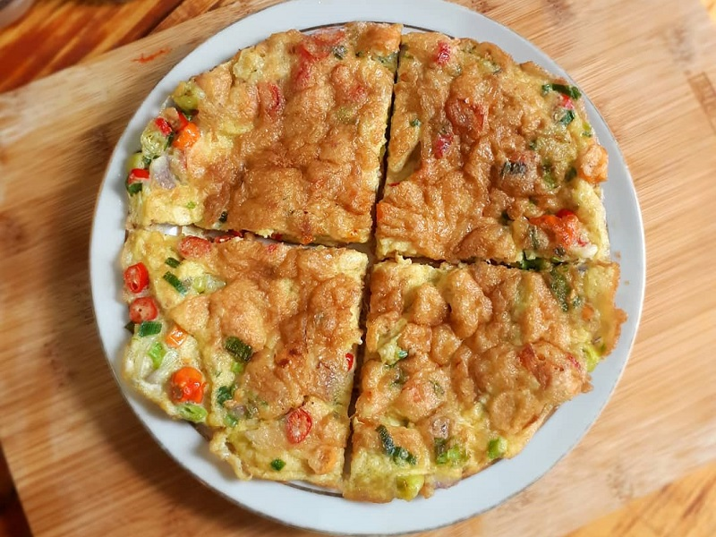

10 Resep Masakan Mudah untuk anak Kos
Hidup di kos-kosan seringkali membutuhkan kreativitas dalam memasak. Untuk para anak kos yang sibuk dan memiliki waktu terbatas, berikut adalah 10 resep masakan yang mudah dan cepat untuk dinikmati:
- Nasi Goreng Sederhana Nasi goreng adalah salah satu makanan yang mudah dan cepat untuk disiapkan. Cukup tumis bawang putih, bawang merah, dan cabai dengan sedikit minyak, tambahkan nasi dan bumbu nasi goreng favorit Anda.
- Mie Goreng Instan Ditingkatkan Tingkatkan rasa mie instan dengan menambahkan telur, potongan daging ayam atau sayuran seperti wortel dan kubis. Tambahkan bumbu favorit Anda untuk hasil yang lebih lezat.
- Telur Dadar Telur dadar adalah makanan cepat dan kaya protein. Kocok telur dengan sedikit garam dan merica, lalu tumis di atas wajan anti lengket.
- Sayur Tumis: Tumis berbagai jenis sayuran seperti wortel, kubis, dan kacang polong dengan sedikit minyak dan tambahkan sedikit kecap manis untuk rasa yang lezat.
- Ayam Goreng Tepung: Ayam goreng tepung bisa disiapkan dengan mudah dengan mencelupkan potongan daging ayam ke dalam campuran tepung terigu dan rempah-rempah, lalu digoreng hingga kecokelatan.
- Sandwich Sederhana: Buat sandwich dengan roti, irisan daging, keju, dan sayuran segar. Tambahkan saus atau mayones untuk rasa yang lebih enak.
- Omelet: Omelet adalah pilihan makanan cepat yang dapat diisi dengan berbagai macam bahan, seperti keju, sayuran, atau potongan daging.
- Salad Buah: Campurkan berbagai macam buah seperti apel, anggur, pisang, dan jeruk dalam satu mangkuk. Tambahkan sedikit saus yogurt atau madu untuk rasa yang menyegarkan.
- Sup Instan Ditingkatkan: Tambahkan potongan daging ayam atau sayuran ke dalam sup instan favorit Anda untuk hidangan yang lebih mengenyangkan dan bergizi.
- Pasta dengan Saus Tiram: Rebus pasta hingga matang, lalu campur dengan saus tiram dan tambahkan potongan daging ayam atau sayuran sesuai selera.
Dengan resep-resep ini, anak kos dapat menyiapkan hidangan yang lezat dan bergizi dalam waktu singkat tanpa perlu mengeluarkan banyak biaya. Selamat mencoba!